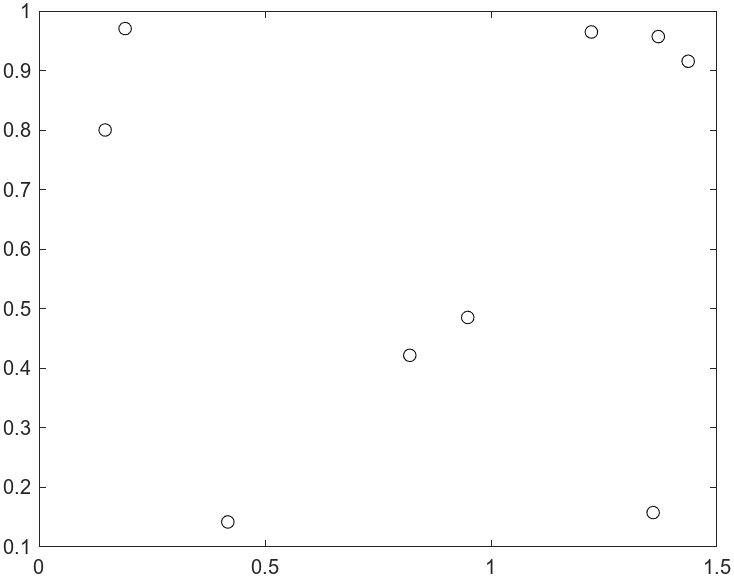
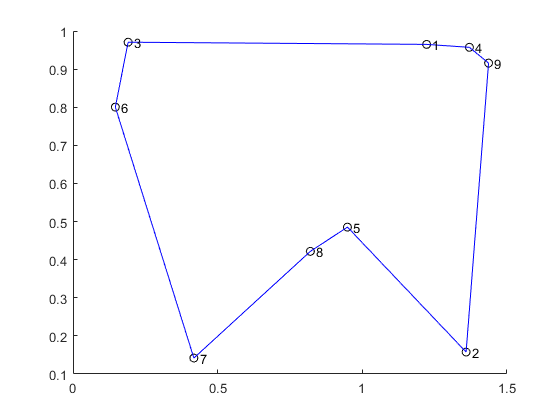

Traveling Salesperson Problem with QUBO
Note
Installation Required: This functionality requires MATLAB Support Package for Quantum Computing.
The classic Traveling Salesperson Problem (TSP) involves a group of cities (locations) that a salesperson must visit before returning to the start location. The problem is to minimize the total distance the salesperson travels. This topic shows how to convert a TSP to a Quadratic Unconstrained Binary Optimization (QUBO) problem, and to solve the QUBO problem using the tabu search algorithm.
Problem Data
The data for a TSP consists of city locations and the distances between each pair of
cities. The distances can be given as a matrix D, where
D(i,j) is the distance from city i to city
j. This example uses the Pythagorean rule to calculate distances,
assuming a flat earth. The solution depends only on the distances, not the city locations.
But to plot the solution, you need the locations.
Specify the following pseudorandom city locations:
N = 9; % Number of cities rng default % For reproducibility stopsLon = 1.5*rand(N,1); stopsLat = rand(N,1); plot(stopsLon,stopsLat,"ko")

Calculate the distances between the cities using the hypot
function.
[X,Y] = meshgrid(1:N); dist = hypot(stopsLon(X) - stopsLon(Y),stopsLat(X) - stopsLat(Y));
Convert to QUBO: Theory
For N cities, use N2 binary variables x(i,j), where i represents the index of a city and j represents the order of the city in the route. In other words, if city i is visited at step j of the route, then x(i,j) = 1.
According to Lucas [2], the following equations suffice to specify that the x(i,j) variables represent a route.
These equations ensure that each city is visited only once, and each step of the route is in one city.
If some cities are not reachable directly from other cities, also include the equation
This equation ensures that when no direct path exists from i to j, then at any time k when the route visits i, the route does not visit j at time k + 1.
To convert the TSP to a QUBO problem, use the following objective function, which is scaled by a positive number M. Each expression in the objective function is a penalty for the solution failing to satisfy one of the previous equations.
As you can see, f(x) = 0 when x represents a valid route. All of the expressions in f(x) are in QUBO form.
To finish the conversion from TSP to QUBO, include the cost of the route in the objective function. Let D(i,j) be the distance of a direct path from i to j. The objective function for the TSP is
Here, interpret x(v,N+1) as x(v,1), meaning the route returns to the start location at step N+1.
Suppose that the multiplier M satisfies 0 < max(D) < M. When you specify M this large, the minimal objective function takes place where f(x) = 0. In this case, the constraints are satisfied, so the x variables represent a valid route.
The final step in converting the quadratic expressions for distance and penalty to a
QUBO problem is to represent them in matrix form. This step is explained in Convert to QUBO: Code. The code that converts
the problem to a QUBO problem is given in the tsp2qubo
Helper Function at the end of this
example.
Solve TSP Using solve
Earlier, you created the distance matrix dist. Convert the distance
matrix to a TSP using the tsp2qubo helper function, and then solve the
problem.
Q = tsp2qubo(dist); result = solve(Q);
Plot the city locations and the calculated route.
binx = result.BestX; binx = reshape(binx,N,[]); ordr = zeros(1,N); for i = 1:N ordr(i) = find(binx(i,:)); % Find order of cities in route end hold on plot(stopsLon(ordr),stopsLat(ordr),"ko") plot(stopsLon(ordr),stopsLat(ordr),"b-") plot(stopsLon(ordr([N 1])),stopsLat(ordr([N,1])),"b-") for i = 1:length(stopsLon) text(stopsLon(i)+0.02,stopsLat(i),num2str(i)) end hold off

disp(ordr)
4 1 3 6 7 8 5 2 9
Find the distance of the route by adding the length of each leg.
myd = 0; for i = 1:(N-1) myd = myd + dist(ordr(i),ordr(i+1)); end myd = myd + dist(ordr(N),ordr(1))
myd =
4.0665Find the distance by evaluating the objective function at the solution.
evaluateObjective(Q,result.BestX)
ans =
4.0665Convert to QUBO: Code
The tsp2qubo helper function converts a TSP to a QUBO problem
according to the procedure in the Convert to QUBO: Theory section. After you solve the
problem, the result is a binary matrix x, where
x(i,j) = 1 means the route visits city i at step
j.
To represent the quadratic expressions in the form
set the variable x as the variables x(i,j) for i and j going from 1 through N. In other words, x is a column vector with N2 entries, corresponding in order to (1,1), …, (1,N), (2,1), …, (2,N), …, (N,1), … (N,N). The Q matrix is of size N2-by-N2.
Expand the first expression in f(x).
The first double sum is linear in the variables and, therefore, does not enter into the quadratic matrix. You can represent the quadratic expression using a block diagonal matrix, where each block is an N-by-N matrix of ones.
Similarly, expand the second double sum, which differs from the first by having the order of the i and j indices interchanged.
You can represent the quadratic term using a block matrix, where every block is an N-by-N identity matrix.
Now calculate the distance to travel from the first city to city N, a one-way trip (calculate the cost to return in another step). The cost to go from city u to city v, including a check that such a step is in the route, is
| (1) |
This expression is the sum over all step numbers in which the step occurs, times the distance of the step. Therefore, the total cost of the one-way trip is
| (2) |
where the sum is over all stops u and v.
To represent this cost function as a QUBO problem, create a block matrix of size N2-by-N2, where each block is of size N-by-N, and the (i,j) block is a matrix with D(i,j) on the upper diagonal.
where
To see that this matrix represents the cost of a route from the first city to the last before returning to the first, consider the contribution of x'Qx from the (u,v) block.
Therefore,
This form matches the form of Equation 2.
The final distance is the distance for returning from the end of the route to the start. To calculate this distance, recall that x(i,1) = 1 when i is the first step of the route, and x(j,N) = 1 when j is the last step. So the cost to return from j to i is
To represent this cost in a QUBO problem, place the cost D(j,i) in the upper-right corner of each block submatrix, and place zeros elsewhere. The matrix M(u,v) for this cost becomes
You can check that this matrix represents the cost of returning in the expression x'Qx, where Q is a block matrix with subblocks M(u,v).
In summary, the QUBO problem representing the cost of a TSP route has four terms:
A quadratic term of block diagonal 1s, along with a constant term N and a linear term
A quadratic term of block diagonal identity blocks, along with a constant term N and a linear term
A quadratic term representing the cost of the sequence of cities from the first city through city N
A quadratic term representing the cost to return from city N to the first city
As explained in Feld [1], to incorporate constraints in the QUBO problem, multiply the first two terms by a large number such as . In this way, the QUBO problem is minimized when the constraints are satisfied because the cost of not satisfying a constraint is larger than any cost associated with the route.
The cost of the first two terms is zero when the constraints are satisfied. You can use the information to check whether a returned solution is feasible. Another way to check is to rewrite the returned x as an N-by-N matrix and see if its row sums and column sums are all 1.
Helper Function
This code creates the tsp2qubo helper function.
function QP = tsp2qubo(dist) % QP = TSP2QUBO(DIST) returns a QUBO problem from the traveling salesperson % problem specified by the distance matrix DIST. DIST is an N-by-N % nonnegative matrix where DIST(i,j) is the distance between locations % i and j. % Copyright 2023 The MathWorks, Inc. N = size(dist,1); % Create constraints on routes A = eye(N); B = ones(N); Q0 = kron(A,B); Q1 = kron(B,A); % Create upper diagonal matrices of distances v = ones(N-1,1); A2 = diag(v,1); Q2 = kron(B,A2); % Q2 has a diagonal just above the main diagonal in each block C = kron(dist,B); Q2 = Q2.*C; % Q2 has an upper diagonal dist(i,j) % Create dist(j,i) in the upper-right corner of each block E = zeros(N); E(1,N) = 1; Q3 = kron(B,E); % Q3 has a 1 in the upper-right corner of each block CP = kron(dist',B); % dist' for D(j,i) Q3 = Q3.*CP; % Q3 has dist(j,i) in the upper-right corner of each block % Add the multipliers M = max(max(dist)); QN = sparse(M*(Q0 + Q1)*N^2 + Q2 + Q3); % Symmetrize QN = (QN + QN.')/2; % Include the constant and linear terms c = -4*ones(N^2,1)*M*N^2; d = 2*N*M*N^2; QP = qubo(QN,c,d); end
References
[1] Feld, Sebastian, Christoph Roch, Thomas Gabor, Christian Seidel, Florian Neukart, Isabella Galter, Wolfgang Mauerer, and Claudia Linnhoff-Popien. “A Hybrid Solution Method for the Capacitated Vehicle Routing Problem Using a Quantum Annealer.” Frontiers in ICT 6 (June 25, 2019): 13. Available at https://arxiv.org/abs/1811.07403.
[2] Lucas, Andrew. “Ising Formulations of Many NP Problems.” Frontiers in Physics 2 (2014). Available at https://www.frontiersin.org/journals/physics/articles/10.3389/fphy.2014.00005/full.
See Also
Functions
Objects
qubo|tabuSearch|qaoa